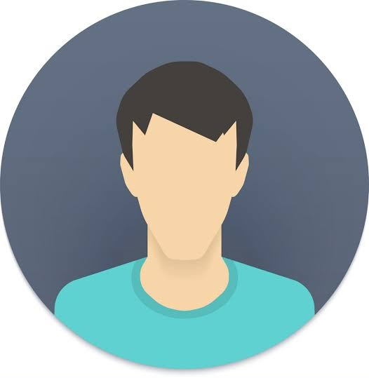

Chat with Andrew


Hi, welcome to 7cups of tea.
Hey, are you there?
yes, how are you?
I've been struggling lately, dealing with my ex.
My girlfriend-- or I should say, now ex-- recently broke up with me.
Oh, I'm sorry to hear that.